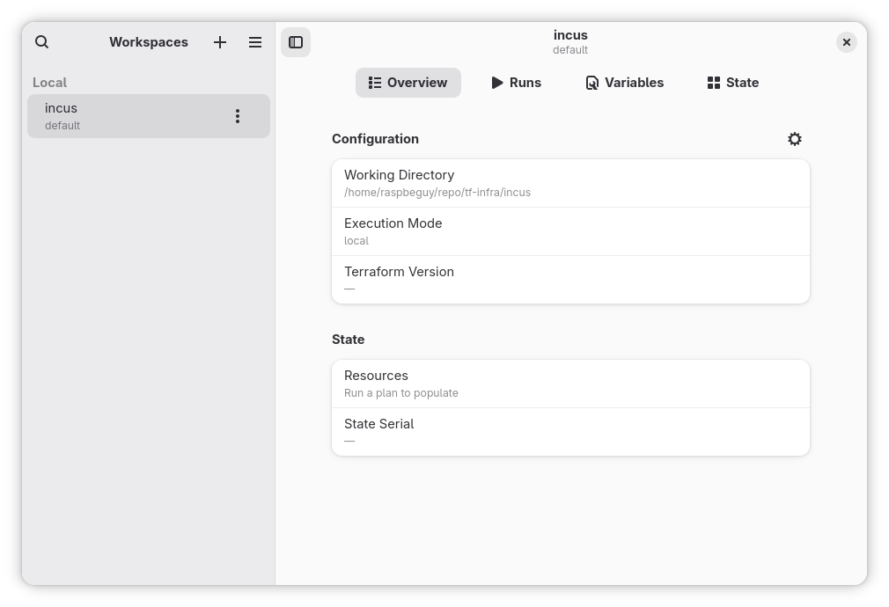
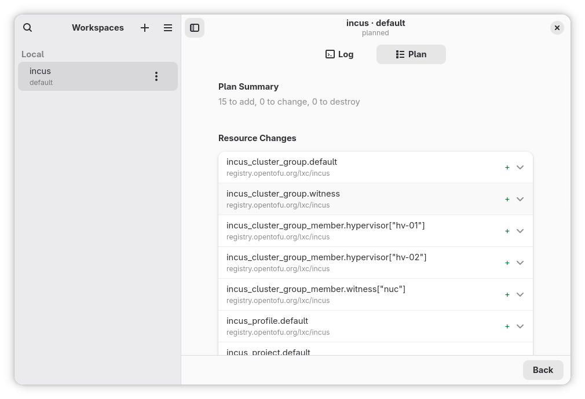
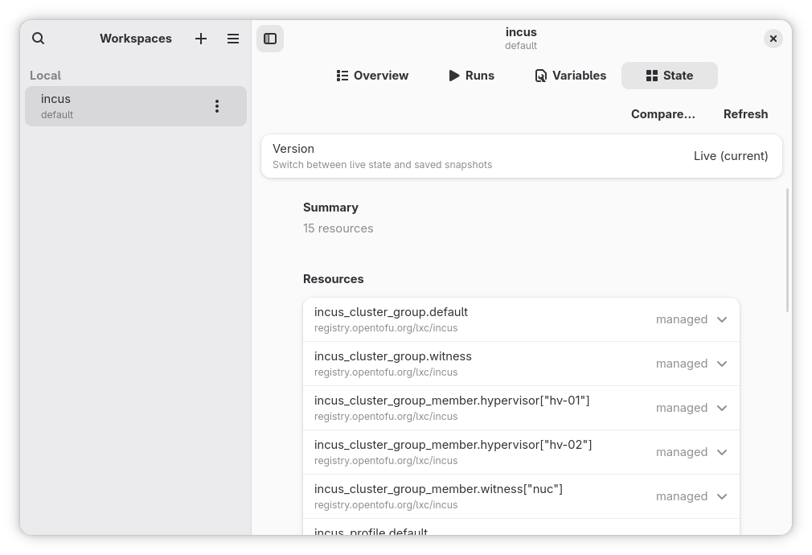
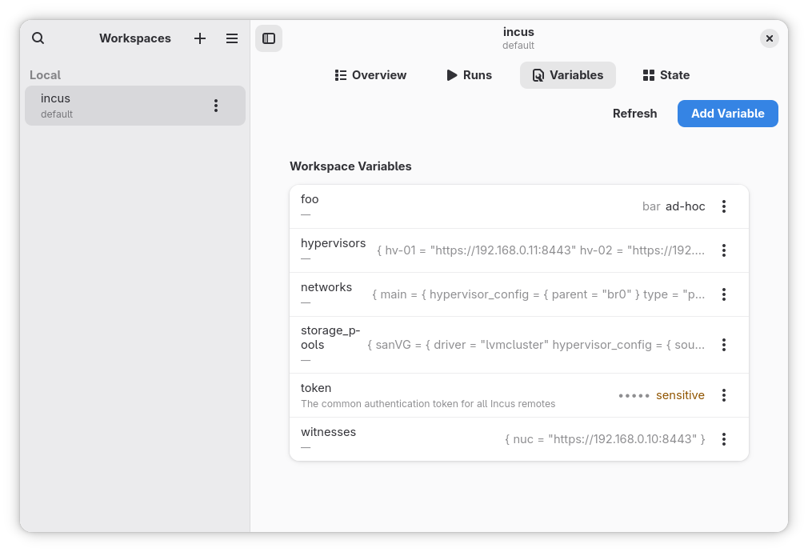

{kind=link}
{kind=link}
{kind=link}
{kind=link}
Workspaces
Group local projects and remote workspaces in one sidebar. Switch between them without restarting.
A native GNOME GUI for Terraform and OpenTofu.
Workspaces, streamed runs, plan diffs, state viewer, variable management — local working dirs and remote backends (HCP, Terraform Enterprise, OTF) under one roof.




Group local projects and remote workspaces in one sidebar. Switch between them without restarting.
tofu plan / apply / destroy with live coloured logs and a working cancel button. Remote runs fetched via API polling.
TFE-style per-resource changes with action badges (+ / ~ / − / −/+) and attribute-level before/after.
Resource tree with attributes, history of past state versions, side-by-side diff between any two versions.
Read and edit; sensitive values masked and persisted to the system keyring (libsecret), never plaintext on disk. Variable sets too.
Local CLI runner alongside HCP Terraform, self-hosted Terraform Enterprise, and OTF — same UI, no branching on backend kind.
Works on any modern Linux desktop. Carries its own runtime.
flatpak install --user --bundle \
./terrain-x86_64.flatpakFor glibc distros (Fedora 41+, Debian Trixie+, Ubuntu 24.10+, Arch) or musl (Alpine, Void). Needs GTK 4 + libadwaita 1.6+ on the host.
tar xzf terrain-linux-amd64-glibc.tar.gz
./terrainGo 1.26+, GTK 4.10+, libadwaita 1.6+, blueprint-compiler, meson.
meson setup build
meson compile -C build
./build/terrainPre-release. Workspace management, runs, plan diff, state, variable management, variable sets, and remote backends (HCP / TFE / OTF) all work. Flathub submission is queued.
The current app icon is a placeholder. Terrain wants a proper GNOME-style app icon; the plan is to apply to GNOME Circle. If you have design chops and want to help — icon, mockups, anything visual — PRs and suggestions are very welcome.